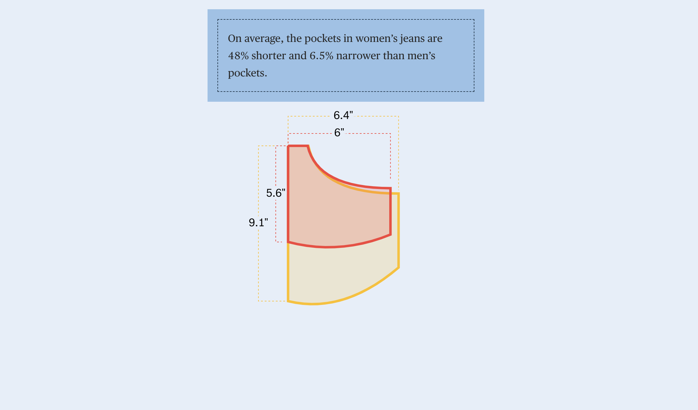
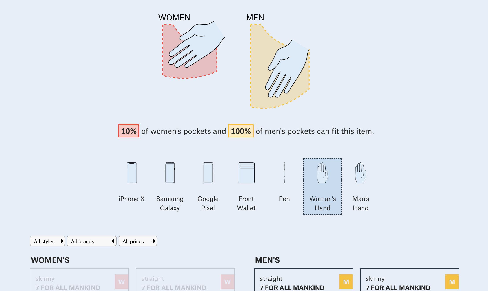
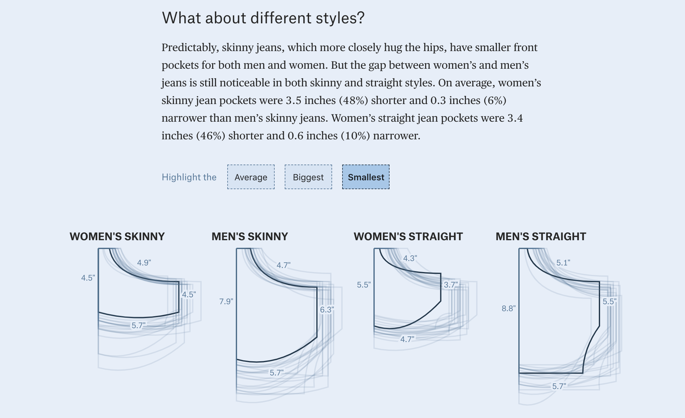
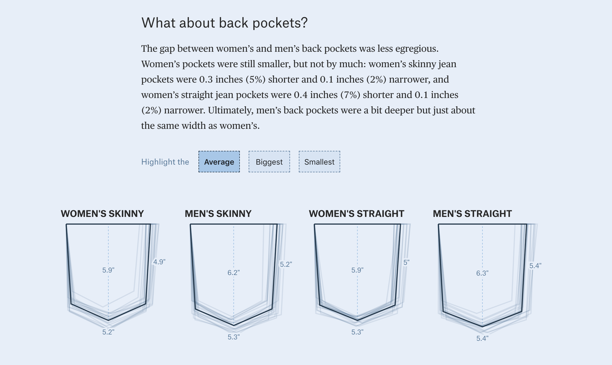
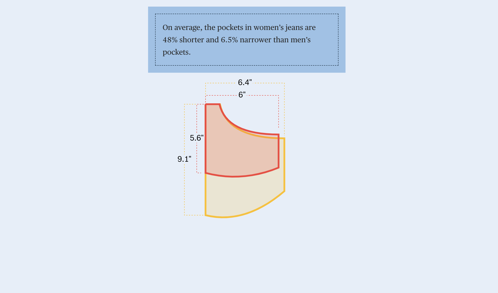
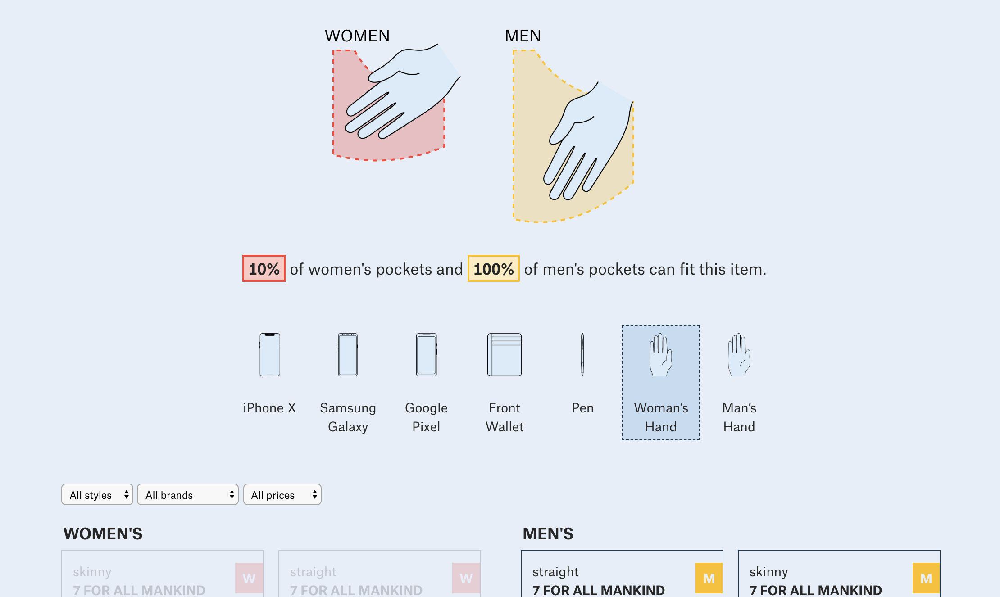
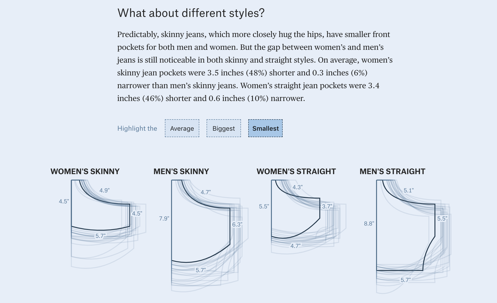
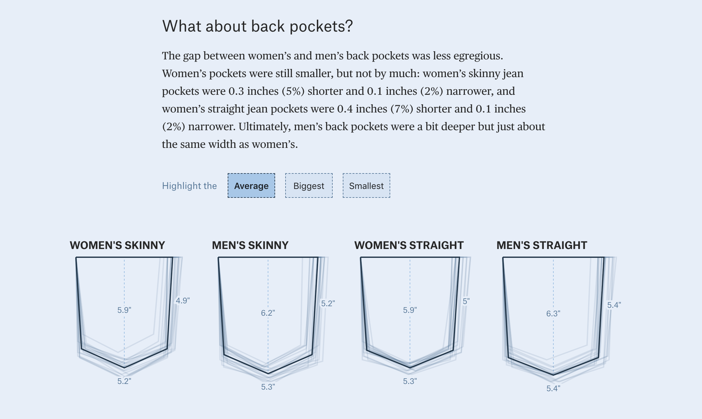

Screenshots


Once on a company retreat, my team was walking down the streets of NYC. Some of our coworkers (those that wore men’s jeans) were able to leave their bulky bags at our previous location as we walked to dinner. Jan and I, however, each had bags in tow simply to hold our necessities: our phones and wallets. We were complaining about how non-functional the pockets in women’s jeans were (assuming that the pants had pockets at all) and decided that this could make for an interesting data story. After a few weeks when we still couldn’t stop talking about this, we came up with a plan to measure the pockets in 80 pairs of jeans from 20 manufacturers. From each brand, we measured both men’s and women’s skinny and straight jeans, each with a 32 inch waist. The results: women’s pockets are the worst.
Jan Diehm, one of my amazing co-workers at The Pudding, and I split the work of this project pretty evenly. We both measured pockets (she in NYC and Tennessee, me in Seattle). She handled the design of the story and much of the writing while I handled the bulk of the programming.
